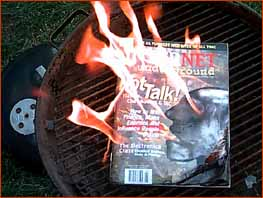

FLAME Internet Underground

|
Flame: 1)(v.) The act of writing insulting or derisive script with the intention of directing such script toward
another Internet user or group of users. 2)(n.) An article or IRC line containing insult or abusive verbiage
directed at either a person or group of persons. For example, see this flame of IU.
While you idle away the hours beside your power-sucking GE air conditioner, hidden from the scorching, torporific heat of the summertime sun, consider burning a few thousand joules thinking about the Flame IU contest. Now is the time to take us to task, and tell us why we're lame. If you don't happen to think we're lame, then just project your earthly frustrations on us. We welcome the beating. Mercilessly smack us like a Kathie Lee piñata at a Honduran sweatshop worker's B-Day party. All you have to do is e-mail or snail mail in an entry that rips our magazine a new one. The most thoughtful, creative and original flames will be posted here at the site (we reserve the right to edit, discard, be disgusted with and emotionally disturbed by all entries)--and the "primo" flame will actually be printed in our September newsstand issue. The grand prize winner will also receive all back issues of IU (even the rare issue #1), as well as a pound of IU's favorite office candy (to be determined). Please refrain from using expletives and from threatening bodily harm to our fragile editors. Most of all, please make no comparisons between IU and Alf, Yanni, Gallagher, Kenny G., Urkel, Howdy Doody or Leonard Part VI--we would consider that hitting below the belt.
Thanks, and good flaming!
Enter via snail mail: |

FLAME INTERNET UNDERGROUND CONTEST